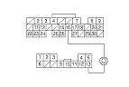
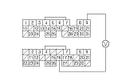
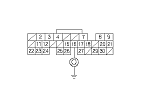

EPS Signal Circuit Troubleshooting
Start the engine, and let it idle.
Align the steering wheel straight ahead.
Check the EPS SIGNAL in the DATA LIST with the HDS.
Is Low indicated?
YES
-
Go to
Step 4
.
NO
-
Go to
Step 6
.
Turn the steering wheel to the full lock position.
Check the EPS SIGNAL in the DATA LIST with the HDS.
Does it change to HIGH?
YES
-
The EPS signal circuit is OK.■
NO
-
Go to
Step 11
.
Turn the ignition switch OFF.
Jump the SCS line with the HDS.
Disconnect ECM/PCM connector E (31P).
Disconnect EPS control unit 13P connector.
Check for continuity between ECM/PCM connector terminal E16 and EPS control unit 13P connector terminal No. 13.
Is there continuity?
YES
-
Substitute a known-good EPS control unit,
and recheck.■
NO
-
Repair open in the wire between the ECM/PCM (E16) and the EPS control unit.■
Turn the ignition switch OFF.
Disconnect the EPS control unit 13P connector.
Turn the ignition switch ON (II).

Measure voltage between ECM/PCM connector terminals A9 and E16.
Is there battery voltage?
YES
-
Substitute a known-good EPS control unit,
and recheck.■
NO
-
Go to
Step 15
.
Turn the ignition switch OFF.
Jump the SCS line with the HDS.
Disconnect ECM/PCM connector E (13P).

Check for continuity between ECM/PCM connector terminal E16 and body ground.
Is there continuity ?
YES
-
Repair short in the wire between the ECM/PCM (E16) and the EPS control unit.■
NO
-
Update the ECM/PCM if it does not have the latest software, or substitute a known-good ECM/PCM, then recheck.
If the symptom/indication goes away with a known-good ECM/PCM, replace the original ECM / PCM .■
